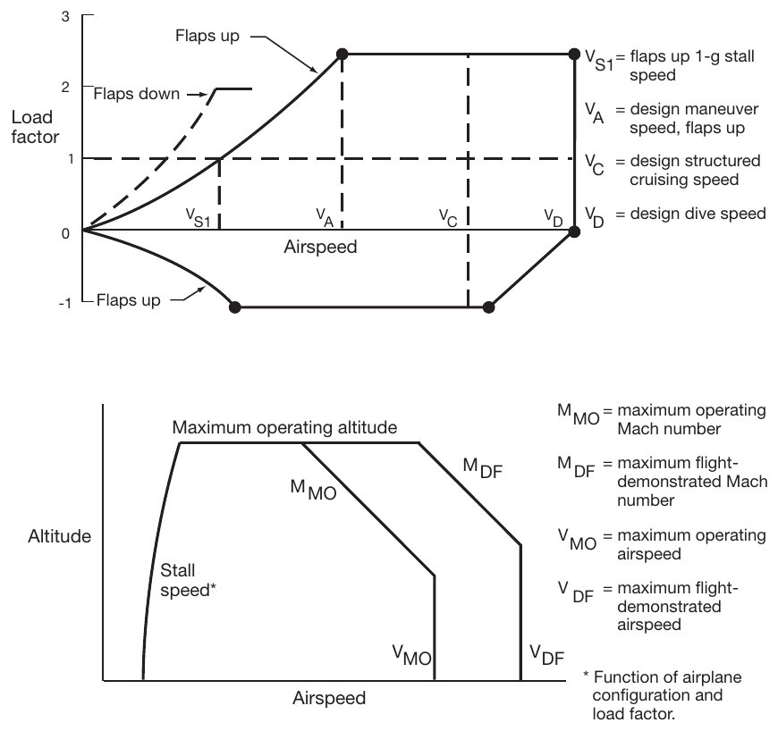

Lesson 09: Aeroplane Certification and the Flight Envelope
Learning objectives
- Describe what certification does — and does not — demonstrate about aircraft handling.
- Identify the main speed and load limits of the flight envelope.
- Explain why upset recovery may take the aircraft outside the conditions tested in certification.
Certification demonstrates behaviour inside the normal flight envelope.
What certification demonstrates
Transport aeroplanes are certified to standards such as CS-25 and FAR Part 25. Test pilots demonstrate that, within the normal flight envelope, the aeroplane has adequate stability, controllability, stall warning and stall characteristics, and the required structural strength.
Certification does not demonstrate:
- recovery from every possible attitude — such as inverted flight or very high bank;
- behaviour far beyond the stall, at extreme sideslip, or combined with failures;
- how an average line pilot performs when startled at night.
Upsets can therefore take the aircraft into conditions where its behaviour is less well known — and where simulator data may also be limited (Lesson 28).
The flight envelope
| Limit | Meaning |
|---|---|
| VMO / MMO | Maximum operating speed / Mach number — not to be deliberately exceeded |
| VD / MD | Design dive speed — demonstrated in flight test, with structural margin; not for line use |
| VA | Design manoeuvring speed — full deflection of one control in one axis is acceptable below it (Lesson 6) |
| VFE, VLE, VLO | Flap and landing gear speed limits |
| VS1g / VSR | Reference stall speed — the basis for take-off and approach speeds |
| Load factor limits | Typically +2.5 / −1.0 g clean, +2.0 / 0 g with flaps extended |
The flight envelope (2)

Margins in normal operation
- Operating speeds include margins above the stall: for example, the final approach reference speed is typically about 1.23 × VSR in the landing configuration.
- Manoeuvring speeds for each flap setting, and the speed bands on the PFD, show the safe range for normal manoeuvres.
- The buffet margin at cruise (Lesson 7) protects against turbulence and bank.
These margins are what prevention protects. Most developing upsets begin as an erosion of one of these margins — usually speed.
Exceeding a speed or load limit to save the aircraft is acceptable when there is no alternative — but avoid it if you can, and report any exceedance so that maintenance can inspect the aircraft.
Key takeaways
- Certification demonstrates behaviour within the normal envelope, not every possible upset.
- Know VMO/MMO, VA, flap/gear limits, stall reference speed and g limits.
- Operating speeds include margins; most upsets start with an eroded margin.
- Report any limit exceedance after a recovery.
Knowledge check
Which statement about certification is correct?